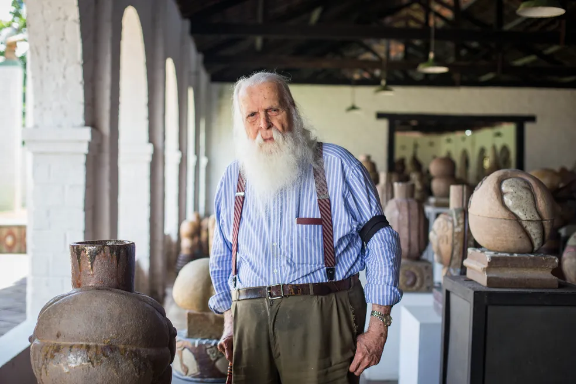
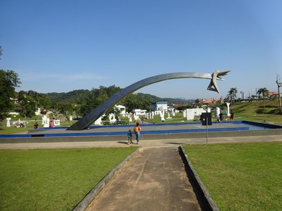
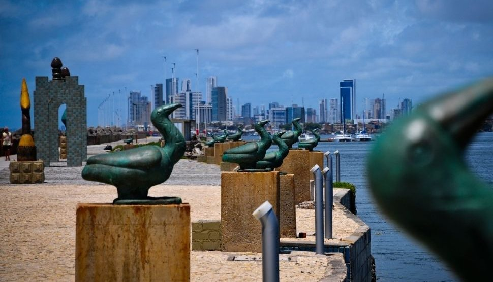

Parque das Esculturas Francisco Brennand: Explore a Arte e a Natureza

Aninhado às margens do Rio Capibaribe, o Parque das Esculturas Francisco Brennand é um verdadeiro oásis cultural situado em Recife, Pernambuco. Este espaço encantador combina paisagens naturais deslumbrantes com uma coleção excepcional de esculturas criadas pelo renomado artista brasileiro Francisco Brennand, oferecendo uma experiência única para os visitantes.
A Arte de Francisco Brennand
Francisco Brennand é um dos artistas mais celebrados do Brasil, conhecido por suas obras que mesclam elementos da natureza com influências históricas e mitológicas. Suas esculturas, muitas das quais são feitas de cerâmica, são distintas por suas formas orgânicas, texturas complexas e imaginação surrealista.
A Jornada pelo Parque
Ao entrar no Parque das Esculturas Francisco Brennand, os visitantes são recebidos por uma paisagem exuberante, onde esculturas monumentais emergem entre a vegetação tropical. O parque é um convite para uma jornada sensorial, onde cada passo revela uma nova peça de arte e uma nova perspectiva sobre a interação entre a arte e a natureza.
Passeio entre Esculturas
Os visitantes podem desfrutar de um passeio tranquilo pelas trilhas sinuosas do parque, explorando as esculturas de Brennand enquanto admiram a beleza natural ao redor. Cada escultura conta sua própria história, convidando os observadores a refletir sobre temas como a vida, a morte, a sexualidade e a espiritualidade.

Eventos Culturais
Além de ser um local de contemplação artística, o Parque das Esculturas Francisco Brennand também é palco de uma variedade de eventos culturais ao longo do ano. Desde exposições temporárias e performances musicais até workshops educacionais e festivais de arte, o parque oferece uma programação diversificada que atrai visitantes de todas as idades e interesses.
Uma Janela para a Criatividade
O Parque das Esculturas Francisco Brennand é mais do que um simples destino turístico; é uma janela para a criatividade e a imaginação de um dos artistas mais talentosos do Brasil. Com sua fusão única de arte, natureza e cultura, o parque oferece uma experiência enriquecedora que inspira e encanta todos aqueles que o visitam.
